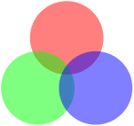
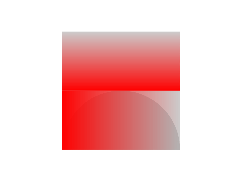
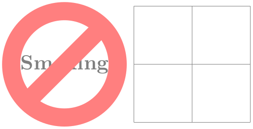

The TikZ and PGF Packages
Manual for version 3.1.9a
The Basic Layer
114 Transparency
For an introduction to the notion of transparency, fadings, and transparency groups, please consult Section 23.
114.1 Specifying a Uniform Opacity¶
Specifying a stroke and/or fill opacity is quite easy.
\pgfsetstrokeopacity{⟨value⟩} ¶
Sets the opacity of stroking operations. The ⟨value⟩ should be a number between 0 and 1, where 1 means “fully opaque” and 0 means “fully transparent”. A value like 0.5 will cause paths to be stroked in a semitransparent way.
\begin{pgfpicture}
\pgfsetlinewidth{5mm}
\color{red}
\pgfpathcircle{\pgfpoint{0cm}{0cm}}{10mm} \pgfusepath{stroke}
\color{black}
\pgfsetstrokeopacity{0.5}
\pgfpathcircle{\pgfpoint{1cm}{0cm}}{10mm} \pgfusepath{stroke}
\end{pgfpicture}
\pgfsetfillopacity{⟨value⟩} ¶
Sets the opacity of filling operations. As for stroking, the ⟨value⟩ should be a number between 0 and 1.
The “filling transparency” will also be used for text and images.

\begin{tikzpicture}
\pgfsetfillopacity{0.5}
\fill[red] (90:1cm) circle
(11mm);
\fill[green] (210:1cm) circle
(11mm);
\fill[blue] (-30:1cm) circle
(11mm);
\end{tikzpicture}
Note the following effect: If you set up a certain opacity for stroking or filling and you stroke or fill the same area twice, the effect accumulates:
\begin{tikzpicture}
\pgfsetfillopacity{0.5}
\fill[red] (0,0) circle
(1);
\fill[red] (1,0) circle
(1);
\end{tikzpicture}
Often, this is exactly what you intend, but not always. You can use transparency groups, see the end of this section, to change this.
114.2 Specifying a Blend Mode¶
To set the blend mode, use the following command:
\pgfsetblendmode{⟨mode⟩} ¶
Sets the blend mode to one of the values described in Section 23.3. As described there, blend modes are an advanced feature of pdf and not always rendered correctly.

\tikz [transparency group] {
\pgfsetblendmode{screen}
\fill[red!90!black] ( 90:.6) circle
(1);
\fill[green!80!black] (210:.6) circle
(1);
\fill[blue!90!black] (330:.6) circle
(1);
}
114.3 Specifying a Fading¶
The method used by pgf for specifying fadings is quite general: You “paint” the fading using any of the standard graphics commands. In more detail: You create a normal picture, which may even contain text, image, and shadings. Then, you create a fading based on this picture. For this, the luminosity of each pixel of the picture is analyzed (the brighter the pixel, the higher the luminosity – a black pixel has luminosity \(0\), a white pixel has luminosity \(1\), a gray pixel has some intermediate value as does a red pixel). Then, when the fading is used, the luminosity of the pixel determines the opacity of the fading at that position. Positions in the fading where the picture was black will be completely transparent, positions where the picture was white will be completely opaque. Positions that have not been painted at all in the picture are always completely transparent.
\pgfdeclarefading{⟨name⟩}{⟨contents⟩} ¶
This command declares a fading named ⟨name⟩ for later use. The “picture” on which the fading is based is given by the ⟨contents⟩. The ⟨contents⟩ are normally typeset in a TeX box. The resulting box is then used as the “picture”. In particular, inside the ⟨contents⟩ you must explicitly open a {pgfpicture} environment if you wish to use pgf commands.
Let’s start with an easy example. Our first fading picture is just some text:
\pgfdeclarefading{fading1}{\textcolor{white}{Ti\emph{k}Z}}
\begin{tikzpicture}
\fill [black!20] (0,0) rectangle
(2,2);
\fill [black!30] (0,0) arc
(180:0:1);
\pgfsetfading{fading1}{\pgftransformshift{\pgfpoint{1cm}{1cm}}}
\fill [red] (0,0) rectangle
(2,2);
\end{tikzpicture}
What’s happening here? The “fading picture” is mostly transparent, except for the pixels that are part of the word TikZ. Now, these pixels are white and, thus, have a high luminosity. This in turn means that these pixels of the fading will be highly opaque. For this reason, only those pixels of the big red rectangle “shine through” that are at the positions of these opaque pixels.
It is somewhat counter-intuitive that the white pixels in a fading picture are opaque in a fading. For this reason, the color pgftransparent is defined to be the same as black. This allows one to write pgftransparent for completely transparent parts of a fading picture and pgftransparent!0 for the opaque parts and things like pgftransparent!20 for parts that are 20% transparent.
Furthermore, the color pgftransparent!0 (which is the same as white and which corresponds to completely opaque) is installed at the beginning of a fading picture. Thus, in the above example the \color{white} was not really necessary.
Next, let us create a fading that gets more and more transparent as we go from left to right. For this, we put a shading inside the fading picture that has the color pgftransparent!0 at the left-hand side and the color pgftransparent!100 at the right-hand side.
% TODO: doesn't compile
\pgfdeclarefading{fading2}
{\tikz \shade[left color=pgftransparent!0,
right color=pgftransparent!100] (0,0) rectangle
(2,2);}
\begin{tikzpicture}
\fill [black!20] (0,0) rectangle
(2,2);
\fill [black!30] (0,0) arc
(180:0:1);
\pgfsetfading{fading2}{\pgftransformshift{\pgfpoint{1cm}{1cm}}}
\fill [red] (0,0) rectangle
(2,2);
\end{tikzpicture}
In our final example, we create a fading that is based on a radial shading.
\pgfdeclareradialshading{myshading}{\pgfpointorigin}
{
color(0mm)=(pgftransparent!0);
color(5mm)=(pgftransparent!0);
color(8mm)=(pgftransparent!100);
color(15mm)=(pgftransparent!100)
}
\pgfdeclarefading{fading3}{\pgfuseshading{myshading}}
\begin{tikzpicture}
\fill [black!20] (0,0) rectangle
(2,2);
\fill [black!30] (0,0) arc
(180:0:1);
\pgfsetfading{fading3}{\pgftransformshift{\pgfpoint{1cm}{1cm}}}
\fill [red] (0,0) rectangle
(2,2);
\end{tikzpicture}
After having declared a fading, we can use it. As for shadings, there are different commands for using fadings:
\pgfsetfading{⟨name⟩}{⟨transformations⟩} ¶
This command sets the graphic state parameter “fading” to a previously defined fading ⟨name⟩. This graphic state works like other graphic states, that is, is persists till the end of the current scope or until a different transparency setting is chosen.
When the fading is installed, it will be centered on the origin with its natural size. Anything outside the fading picture’s original bounding box will be transparent and, thus, the fading effectively clips against this bounding box.
The ⟨transformations⟩ are applied to the fading before it is used. They contain normal pgf transformation commands like \pgftransformshift. You can also scale the fading using this command. Note, however, that the transformation needs to be inverted internally, which may result in inaccuracies and the following graphics may be slightly distorted if you use a strong ⟨transformation⟩.
% TODO: remove code only, doesn't compile
\pgfdeclarefading{fading2}
{\tikz \shade[left color=pgftransparent!0,
right color=pgftransparent!100] (0,0) rectangle
(2,2);}
\begin{tikzpicture}
\fill [black!20] (0,0) rectangle
(2,2);
\fill [black!30] (0,0) arc
(180:0:1);
\pgfsetfading{fading2}{}
\fill [red] (0,0) rectangle
(2,2);
\end{tikzpicture}
\pgfdeclarefading {fading2} {\tikz \shade [left
color=pgftransparent!0, right color=pgftransparent!100]
(0,0) rectangle (2,2);}
\begin{tikzpicture}
\fill [black!20] (0,0) rectangle
(2,2);
\fill [black!30] (0,0) arc
(180:0:1);
\pgfsetfading{fading2}{\pgftransformshift{\pgfpoint{1cm}{1cm}}
\pgftransformrotate{20}}
\fill [red] (0,0) rectangle
(2,2);
\end{tikzpicture}
\pgfsetfadingforcurrentpath{⟨name⟩}{⟨transformations⟩} ¶
This command works like \pgfsetfading, but the fading is scaled and transformed according to the following rules:
1. If the current path is empty, the command has the same effect as \pgfsetfading.
2. Otherwise it is assumed that the fading has a size of 100bp times 100bp.
3. The fading is resized and shifted (using appropriate transformations) such that the position \((25\mathrm {bp},25\mathrm {bp})\) lies at the lower-left corner of the current path and the position \((75\mathrm {bp},75\mathrm {bp})\) lies at the upper-right corner of the current path.
Note that these rules are the same as the ones used in \pgfshadepath for shadings. After these transformations, the ⟨transformations⟩ are executed (typically a rotation).

\pgfdeclarehorizontalshading{shading}{100bp}
{ color(0pt)=(transparent!0); color(25bp)=(transparent!0);
color(75bp)=(transparent!100); color(100bp)=(transparent!100)}
\pgfdeclarefading{fading}{\pgfuseshading{shading}}
\begin{tikzpicture}
\fill [black!20] (0,0) rectangle
(2,2);
\fill [black!30] (0,0) arc
(180:0:1);
\pgfpathrectangle{\pgfpointorigin}{\pgfpoint{2cm}{1cm}}
\pgfsetfadingforcurrentpath{fading}{}
\pgfusepath{discard}
\fill [red] (0,0) rectangle
(2,1);
\pgfpathrectangle{\pgfpoint{0cm}{1cm}}{\pgfpoint{2cm}{1cm}}
\pgfsetfadingforcurrentpath{fading}{\pgftransformrotate{90}}
\pgfusepath{discard}
\fill [red] (0,1) rectangle
(2,2);
\end{tikzpicture}
\pgfsetfadingforcurrentpathstroked{⟨name⟩}{⟨transformations⟩} ¶
This command works like \pgfsetfadingforcurrentpath, only the current path is enlarged by the line width in both \(x\)- and \(y\)-direction. This is exactly the enlargement necessary to compensate for the fact that if the current path will be stroked, this much needs to be added around the path’s bounding box to actually contain the path.
\pgfdeclarehorizontalshading {shading}{100bp} {
color(0pt)=(transparent!0); color(25bp)=(transparent!0);
color(75bp)=(transparent!100);
color(100bp)=(transparent!100)} \pgfdeclarefading
{fading}{\pgfuseshading {shading}}
\begin{tikzpicture}
\pgfsetlinewidth{2mm}
\pgfpathmoveto{\pgfpointorigin}
\pgfpathlineto{\pgfpoint{2cm}{0cm}}
\pgfsetfadingforcurrentpathstroked{fading}{}
\pgfusepath{stroke}
\end{tikzpicture}
114.4 Transparency Groups¶
Transparency groups are declared using the following commands.
\begin{pgftransparencygroup}[⟨options⟩] ¶
⟨environment contents⟩
\end{pgftransparencygroup}
This environment should only be used inside a {pgfpicture}. It has the following effect:
1. The ⟨environment contents⟩ are stroked/filled “ignoring any outside transparency”. This means, all previous transparency settings are ignored (you can still set transparency inside the group, but never mind). This means that if in the ⟨environment contents⟩ you stroke a pixel three times in black, it is just black. Stroking it white afterwards yields a white pixel, and so on.
2. When the group is finished, it is painted as a whole. The fill transparency settings are now applied to the resulting picture. For instance, the pixel that has been painted three times in black and once in white is just white at the end, so this white color will be blended with whatever is “behind” the group on the page.
The optional ⟨options⟩ are keys that configure the transparency group further. Two keys are currently defined:
•knockout=⟨true or false⟩ Configures whether the group is a knockout group (if no argument is given, true is assumed; initially the key is always false, even when the command is used in a nested manner.) See Section 23.4 for details on knockout groups.
•isolated=⟨true or false⟩ Similar, but configures whether the group is an isolated group. Also see Section 23.4 for details on isolated groups.
Note that, depending on the driver, pgf may have to guess the size of the contents of the transparency group (because such a group is put in an XForm in pdf and a bounding box must be supplied). pgf will use normally use the size of the picture’s bounding box at the end of the transparency group plus a safety margin of 1cm. Under normal circumstances, this will work nicely since the picture’s bounding box contains everything anyway. However, if you have switched off the picture size tracking or if you are using canvas transformations, you may have to make sure that the bounding box is big enough. The trick is to locally create a picture that is “large enough” and then insert this picture into the main picture while ignoring the size. The following example shows how this is done:

\usetikzlibrary {shapes.symbols}
\begin{tikzpicture}
\draw [help lines] (0,0) grid
(2,2);
% Stuff outside the picture, but still in a transparency
group.
\node [left,overlay] at
(0,1) {
\begin{tikzpicture}
\pgfsetfillopacity{0.5}
\pgftransparencygroup
\node at
(2,0) [forbidden sign,line width=2ex,draw=red,fill=white]
{Smoking};
\endpgftransparencygroup
\end{tikzpicture}
};
\end{tikzpicture}
\pgftransparencygroup
⟨environment contents⟩
\endpgftransparencygroup
Plain TeX version of the {pgftransparencygroup} environment.
\startpgftransparencygroup
⟨environment contents⟩
\stoppgftransparencygroup
This is the ConTeXt version of the environment.